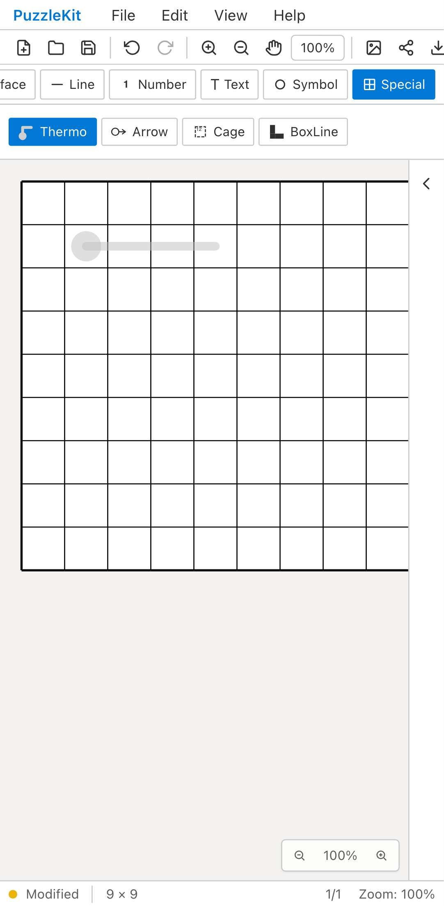
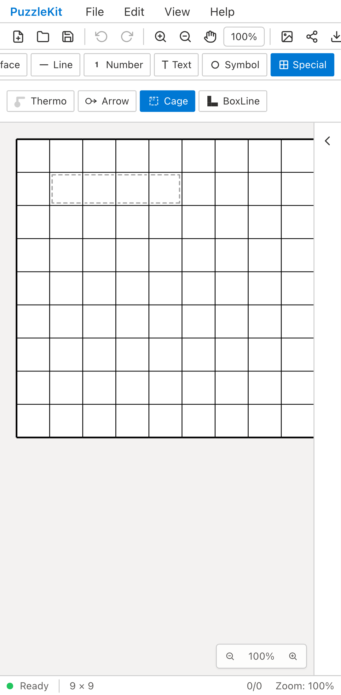
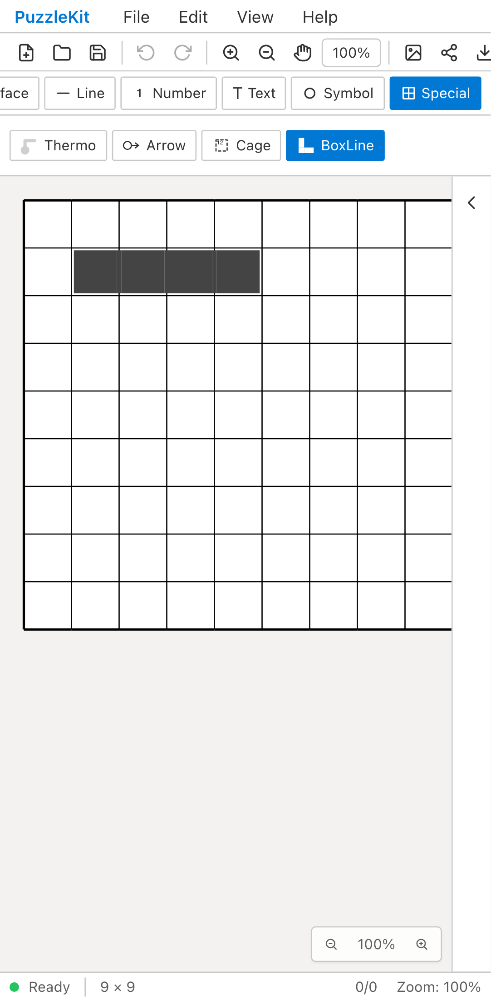
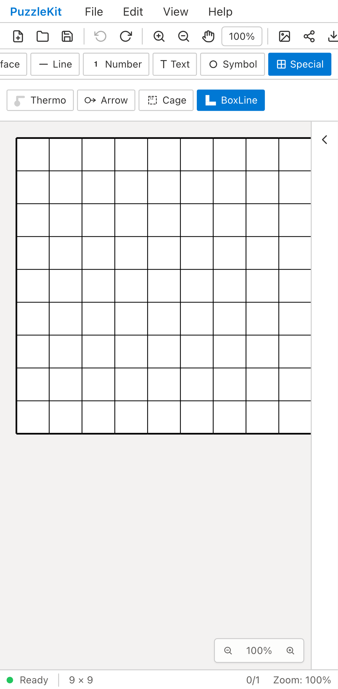
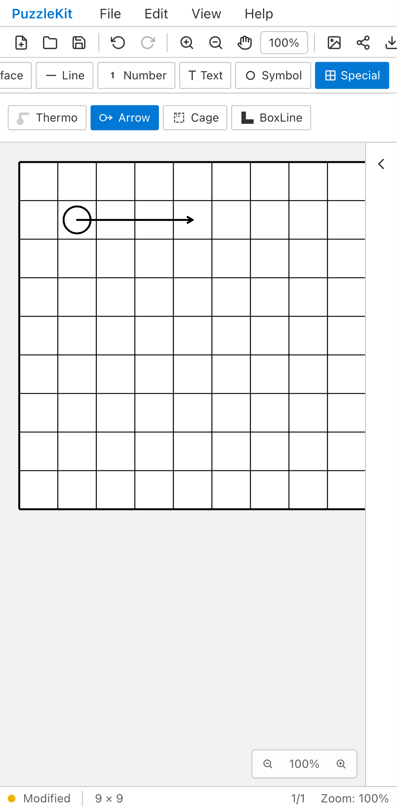

Arrow/Thermo/Cageは指を離した直後、BoxLineはUndo操作後を比較します。Beforeでは前者が未確定のプレビューのまま、BoxLineはUndo無効で消せません。Afterは図形として確定し、Undoで戻せます。Chromium Pixel 7のタッチエミュレーションです。
 c41e2e31a9c8400cc1f534eb025179a2052fa508 · 13.08s
c41e2e31a9c8400cc1f534eb025179a2052fa508 · 13.08s
8c99cb6bce393889aa1ba13045f3ba6c7165dba3 · 5.80s
c41e2e31a9c8400cc1f534eb025179a2052fa508 · 12.00s
c41e2e31a9c8400cc1f534eb025179a2052fa508 · 12.84s
8c99cb6bce393889aa1ba13045f3ba6c7165dba3 · 2.16s
8c99cb6bce393889aa1ba13045f3ba6c7165dba3 · 5.72s 8c99cb6bce393889aa1ba13045f3ba6c7165dba3 · 1.68s
8c99cb6bce393889aa1ba13045f3ba6c7165dba3 · 1.68s